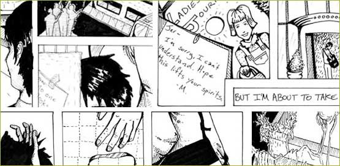

Artist and writer Nell Taylor offers the second of two installments of her
graphic novella "The Brutalists." This web of black-and-white illustrations and text tells the tragic story of an architect, a preservationist and a
dilapidated (but adorable) Polish deli.
Did you miss the first installment? Read it here.
| enter |